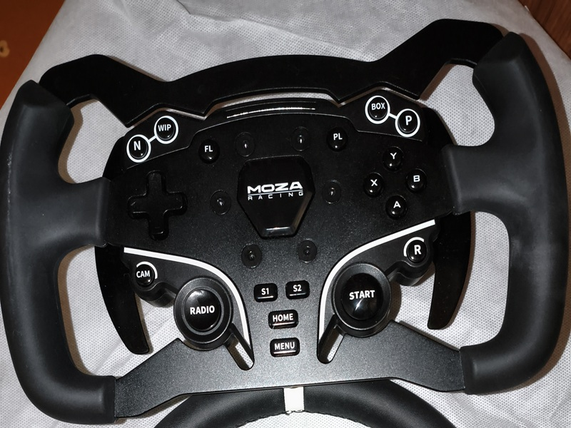

Текстовая RPG-игра: бот с локациями, монстрами, инвентарём, системой уровней, навыков. Игрок перемещается по локациям, сражается с мобами (монстрами, разбойниками и т.д.). Если буду развивать бот, то обязательно добавлю простой сюжет, механику фракций, квестов, механику питомцев, более сложную экономику. Но пока что мне лень и мало времени на реализацию этого.
GeoGuessr-бот: бот для угадывания стран по фото. Есть система жизней, магазин, подсказки, личная и глобальная статистика. Сделал два режима: короткий, в котором статистика подсчитывается по более простой модели, и соревновательный, в котором статистика ведётся так, чтобы объективно оценить игрока. В планах добавить больше локаций, пока их всего 20. Если бы сервисы Google не были ограничены в России, можно было бы добавить мини приложение в бота для просмотра местности по полноценной панораме, а не фотографии с ней. Доделать таблицу лидеров по очкам и добавить новые режимы игры. Переделать нынешнюю систему оценивания в более сложную которая будет оценивать местность скорость ответа и точность.

На этом руле проехал свою лучшую гонку
Участвую в любительских онлайн‑чемпионатах. Лучший результат — финиширование на 6-ом месте, стартовав с 14-го в 6-часовой гонке в iRacing на пару с другом. Конечно, были и победы, но, как по мне, подняться на 8 позиций в долгой гонке — это более тяжёлый результат.
Особых достижений нет т.к. не участвовал в соревнованиях или в долгих спринтах, но за раз проезжал большое расстояние — 45 км между населёнными пунктами
1 курс СГПЭК по специальности «Системное администрирование». Пока в основном идёт школьная программа, а всё, что связано с программированием и администрированием, изучаю самостоятельно дома. Иногда пересекается с учёбой, но чаще — параллельно.
2026 · Завгородний Игорь · СИС1А